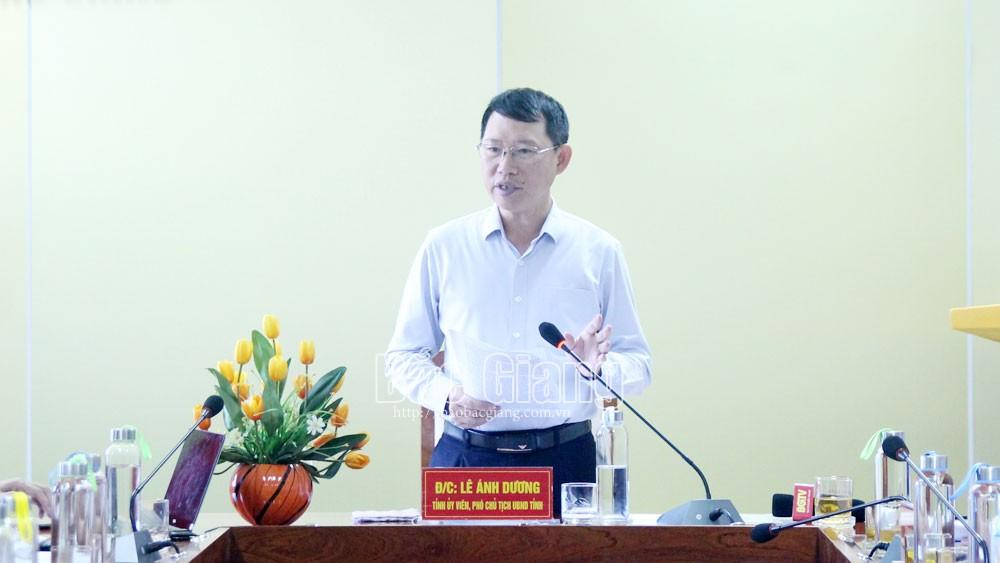

Phó Chủ tịch UBND tỉnh Lê Ánh Dương: Tổ chức lễ khai giảng năm học mới ngắn gọn, bảo đảm an toàn
(Theo BGĐT) - Ngày 27/8, Phó Chủ tịch UBND tỉnh Lê Ánh Dương làm việc với Sở Giáo dục và Đào tạo (GD&ĐT) về công tác chuẩn bị năm học mới 2020-2021. Cùng dự có đại diện lãnh đạo một số sở, ngành; phòng GD&ĐT các huyện, thành phố.
|  |
Phó Chủ tịch UBND tỉnh Lê Ánh Dương phát biểu chỉ đạo tại hội nghị. |
{kind=link}
Chuẩn bị năm học 2020-2021, thời gian qua Sở GD&ĐT đã phối hợp với Sở Nội vụ tuyển dụng 1.471 chỉ tiêu giáo viên.
Phối hợp với các huyện, thành phố sắp xếp đội ngũ bảo đảm đủ tỷ lệ và cân đối về cơ cấu bộ môn, nhất là ưu tiên bố trí đủ giáo viên dạy lớp 1 theo tỷ lệ 1,5/lớp để thực hiện tốt chủ trương đổi mới chương trình, sách giáo khoa lớp 1.
Bên cạnh đó, ngành giáo dục tích cực tham mưu với cấp ủy, chính quyền tăng cường xây mới, sửa chữa cơ sở vật chất, bổ sung trang thiết bị dạy và học với tổng kinh phí hơn 870 tỷ đồng.
Theo kế hoạch, thời gian tựu trường thống nhất trong các cấp học là 1/9, khai giảng vào ngày 5/9, ngày bắt đầu thực hiện kế hoạch năm học là 7/9.
Căn cứ theo hướng dẫn của Bộ GD&ĐT và tình hình thực tế địa phương, Sở GD&ĐT hướng dẫn các đơn vị tổ chức khai giảng ngắn gọn, bảo đảm an toàn phòng, chống dịch Covid-19, tạo không khí vui tươi, phấn khởi cho học sinh bước vào năm học mới.
Tuy vậy, do Bộ GD&ĐT chưa tổ chức tổng kết năm học 2019-2020 và ban hành Chỉ thị nhiệm vụ trọng tâm năm học 2020-2021 nên ngành chưa tổ chức tổng kết năm học.
Ông Phạm văn Hà - Trưởng phòng GD&ĐT huyện Hiệp Hòa nêu một số khó khăn trong công tác sáp nhập trường. |
{kind=link}
Thảo luận tại đây, đại diện lãnh đạo phòng GD&ĐT các huyện Việt Yên, Hiệp Hòa và một số địa phương khác nêu một số khó khăn, đồng thời kiến nghị UBND tỉnh quan tâm khi thực hiện sáp nhập các trường cần tính toán thận trọng, phù hợp với thực tiễn để vừa giảm đầu mối, vừa nâng cao chất lượng, hiệu quả dạy học, đúng với điều lệ trường học và tiêu chí trường chuẩn quốc gia.
Ngoài ra, một số ý kiến đề nghị Sở Nội vụ tiếp tục phối hợp chặt chẽ với ngành giáo dục trong việc tham mưu với UBND tỉnh tuyển dụng giáo viên hằng năm đáp ứng nhu cầu, lộ trình đổi mới chương trình, sách giáo khoa đến năm 2025.
UBND các huyện, TP quan tâm dành kinh phí ngân sách xây dựng phòng học, phòng chức năng, mua sắm thiết bị dạy học tối thiểu cho các trường tiểu học, THCS. Xây bếp ăn cho các trường ở những nơi phụ huynh học sinh có nhu cầu gửi con học 2 buổi/ngày.
Phát biểu chỉ đạo, đồng chí Lê Ánh Dương, Phó Chủ tịch UBND tỉnh nhấn mạnh năm học mới 2020-2021 diễn ra trong bối cảnh dịch Covid 19 diễn biến phức tạp. Do vậy ngành giáo dục cần nỗ lực, cố gắng triển khai thực hiện nhiệm vụ kép, vừa tổ chức giáo dục, vừa phòng dịch theo chỉ đạo của Thủ tướng Chính phủ.
Đồng chí Phó Chủ tịch UBND tỉnh đề nghị đối với việc tổng kết năm học, Sở GD&ĐT cần chủ động tổng kết xong trước ngày khai giảng. Đồng chí cũng nhất trí với dự kiến chương trình, nội dung khai giảng mà Sở GD&ĐT xây dựng đó là tổ chức theo hình thức trực tiếp như mọi năm. Tuy nhiên, tùy theo tình hình thực tế các trường xây dựng kế hoạch tổ chức ngắn gọn, thời gian không quá 45 phút, chỉ làm phần lễ, không tổ chức phần hội và bảo đảm yêu cầu về phòng, chống dịch.
Ngay sau ngày khai giảng, Sở GD&ĐT quan tâm hướng dẫn các cơ sở giáo dục thực hiện nghị quyết của HĐND tỉnh liên quan đến các khoản thu trong nhà trường, thực hiện giãn thu, tránh lạm thu, giảm gánh nặng cho phụ huynh học sinh.
Đồng chí Lê Ánh Dương biểu dương ngành giáo dục có nhiều cố gắng trong việc chuẩn bị các điều kiện triển khai Chương trình Giáo dục phổ thông mới và thay sách giáo khoa. Các trường tiểu học trong quá trình thực hiện cần tăng cường tổ chức cho giáo viên dự giờ, trao đổi kinh nghiệm, kịp thời tháo gỡ vướng mắc phát sinh. Khuyến khích các nhà trường tổ chức ăn bán trú, nhất là đối với học sinh lớp 1 do các em học 2 buổi/ngày.
Trước những kiến nghị của ngành về khó khăn, vướng mắc liên quan đến sáp nhập trường, đồng chí khẳng định đây là chủ trương lớn của Đảng nhằm hướng tới mục tiêu tinh gọn bộ máy và bảo đảm nâng cao chất lượng hoạt động của cơ sở giáo dục. Hai ngành nội vụ và giáo dục cần tiếp tục phối hợp khảo sát thực tế, phải có tầm nhìn lâu dài trong thực hiện chủ trương sáp nhập trường, nhất là đối với những địa bàn gần các khu, cụm công nghiệp khi gia tăng dân số cơ học rất lớn. Sở Nội vụ tổ chức kiểm tra, đánh giá lại việc sáp nhập trường từ năm 2016 đến nay, xây dựng báo cáo tổng thể với UBND tỉnh để có chủ trương phù hợp trong những năm tiếp theo.
Để tháo gỡ khó khăn do thiếu giáo viên cục bộ, đồng chí Lê Ánh Dương cho biết hiện nay Chính phủ đã ban hành Nghị quyết số 102/NQ-CP về giải pháp đối với biên chế sự nghiệp giáo dục và y tế, đề nghị Sở Nội vụ phối hợp với Sở GD&ĐT tham mưu với UBND tỉnh thực hiện tuyển dụng theo Nghị quyết này.
Cùng đó, Sở GD&ĐT xây dựng báo cáo tổng hợp gia tăng học sinh trong năm học 2020-2021, dự báo xu hướng tăng, giảm học sinh trong thời gian 5 năm tới, kịp thời đề xuất với UBND tỉnh các giải pháp khắc phục quá tải trường lớp ngay trong năm học này và những năm tiếp theo.